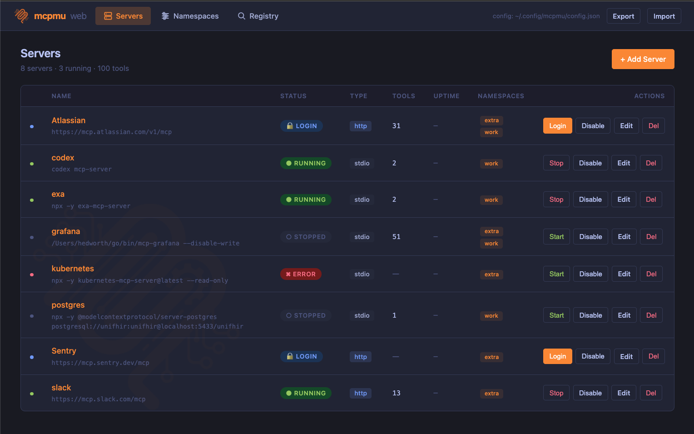
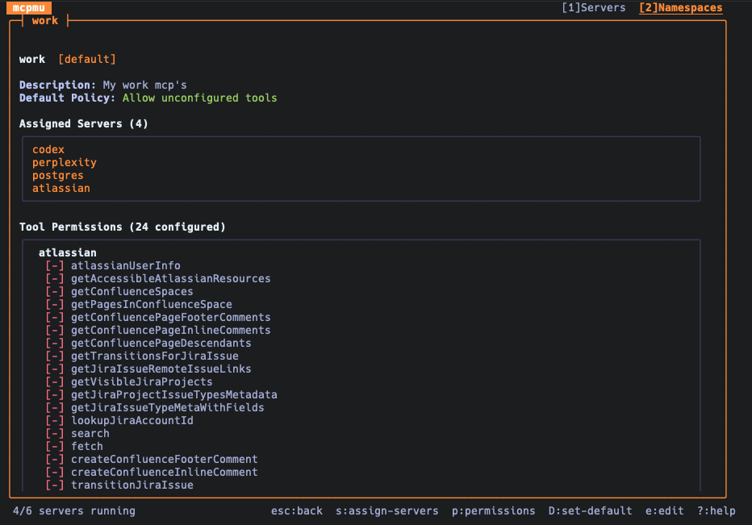

One MCP config.
Every agent.
Your tools, shared across Claude Code, Codex, Cursor and beyond. Configure once. Load less context. Decide exactly what each agent can do.
Configure your servers.
Connect your agents.
Add a server to mcpmu once. Point each agent at the gateway and share the same server definitions, authentication and tool rules.
Keep work, personal and project tools in separate namespaces. Each agent gets the right view of the same configuration.
Explore namespaces ↗# Add your server once
mcpmu add context7 -- npx -y @upstash/context7-mcp
# Connect Claude Code
claude mcp add mcpmu -- mcpmu serve --stdio
# Connect Codex to the same setup
codex mcp add mcpmu -- mcpmu serve --stdioYour context is precious.
Spend it on the task.
A large tool catalog can fill your context with schemas before an agent starts working. mcpmu replaces that upfront payload with three wrapper tools and a compact catalog.
Your agent discovers what’s available, fetches full schemas when needed, and calls the underlying tools. You choose how much detail the catalog includes.
Every tool. Every schema. Up front.
list_toolsget_tool_schemainvoke_toolCompact catalog. Full schemas on demand.
mcpmu namespace set-compression work mediumOpt-in, per namespace. Example counts are from a setup with 8 servers and 100 tools. Actual context savings depend on your tool catalog and compression level. How compression works ↗
The right tools.
For the right agent.
Give a research agent read access. Allow a development agent to make changes. Block a dangerous tool across every namespace.
mcpmu enforces permissions at the gateway, including calls through compression. Denied tools stay out of discovery and their calls are blocked before dispatch.
Understand tool permissions ↗See what you’re sharing.
Manage servers, namespaces and permissions in your terminal or browser.
{kind=link}

{kind=link}

One small gateway.
A better MCP setup.
Free and open source. No account or subscription required.
View source on GitHub ↗brew tap Bigsy/tap
brew install mcpmu